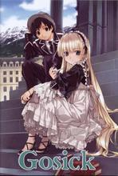
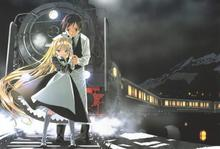

This is a website for GOSICK...
Victorique De Blois
The heroine of the story.
Victorique has the appearance of a small, almost doll-like, girl with very long blonde hair and emerald eyes and a voice that sounds beyond her age, and typical tsundere.
Another important part of Victorique's appearance is a pipe that she smokes when thinking about something; though in the anime smoke is never seen coming from the pipe, due to her young age. She spends her days at the conservatory at the top of the library, reading several difficult books, often in different languages, simultaneously.
She points at one wall of the library and has told Kazuya that she has read almost all the books over there.